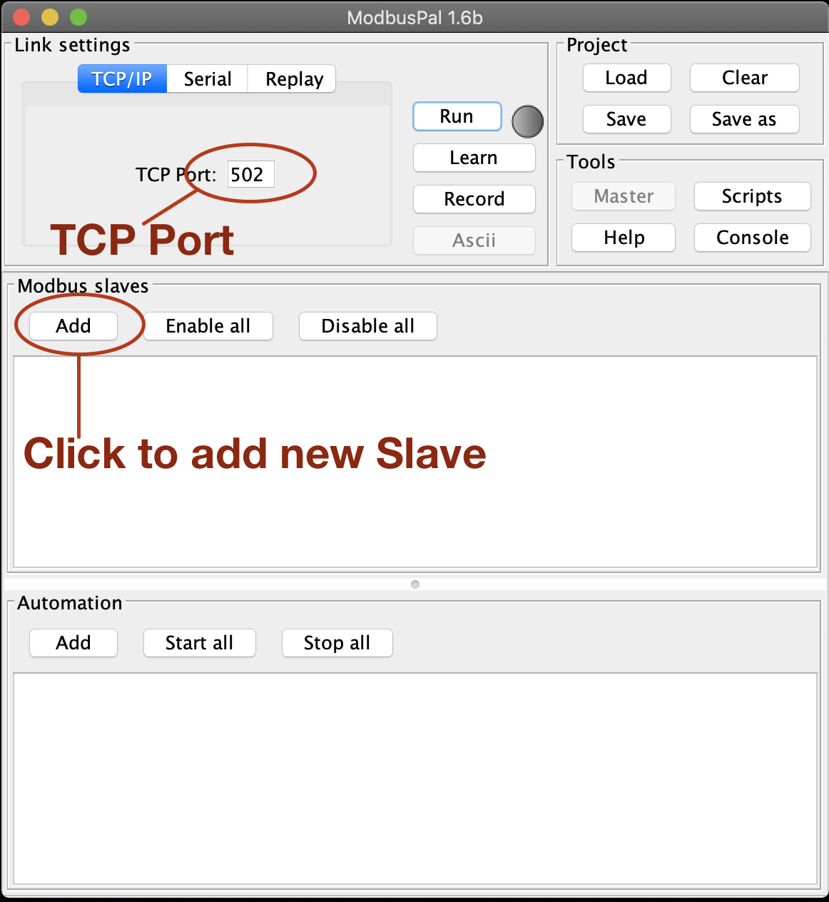
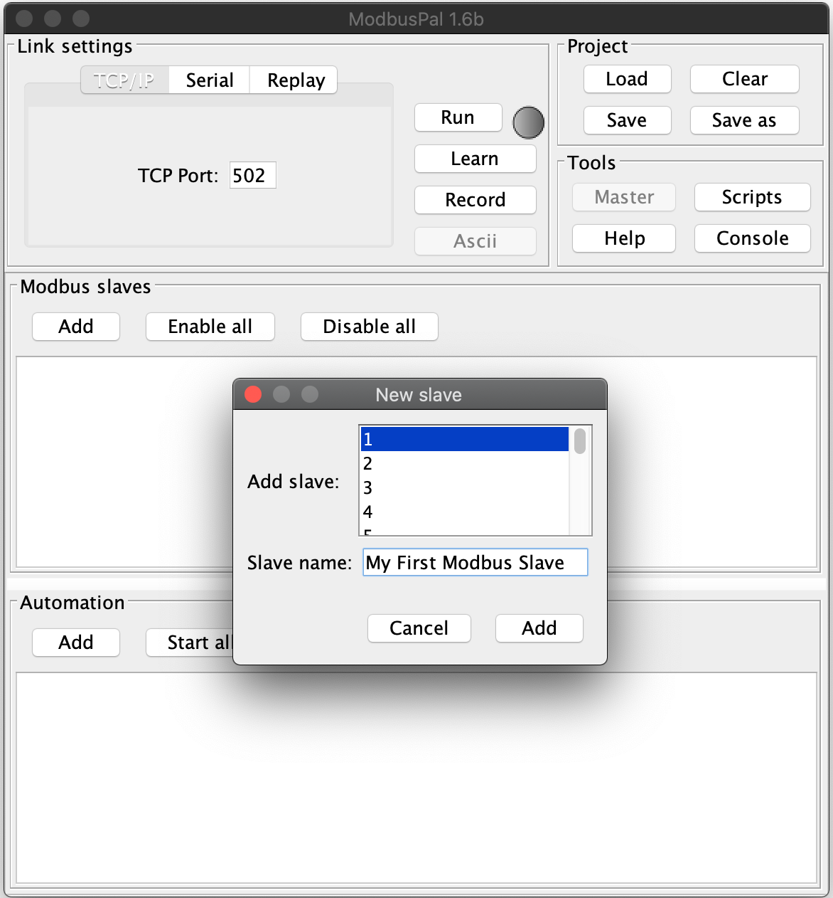
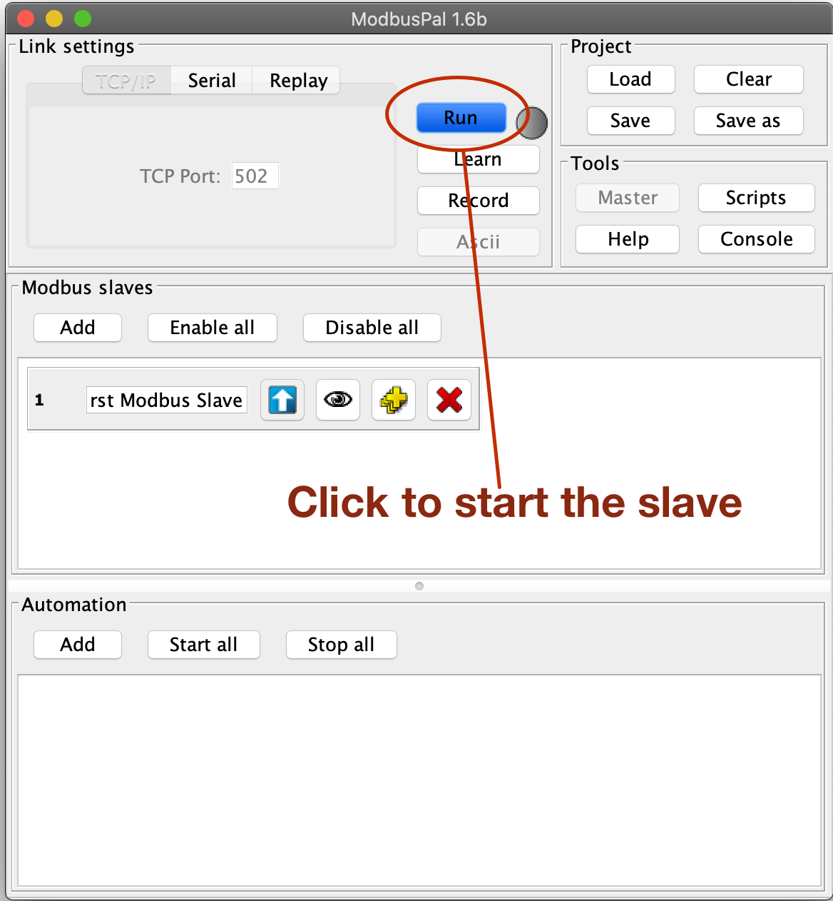
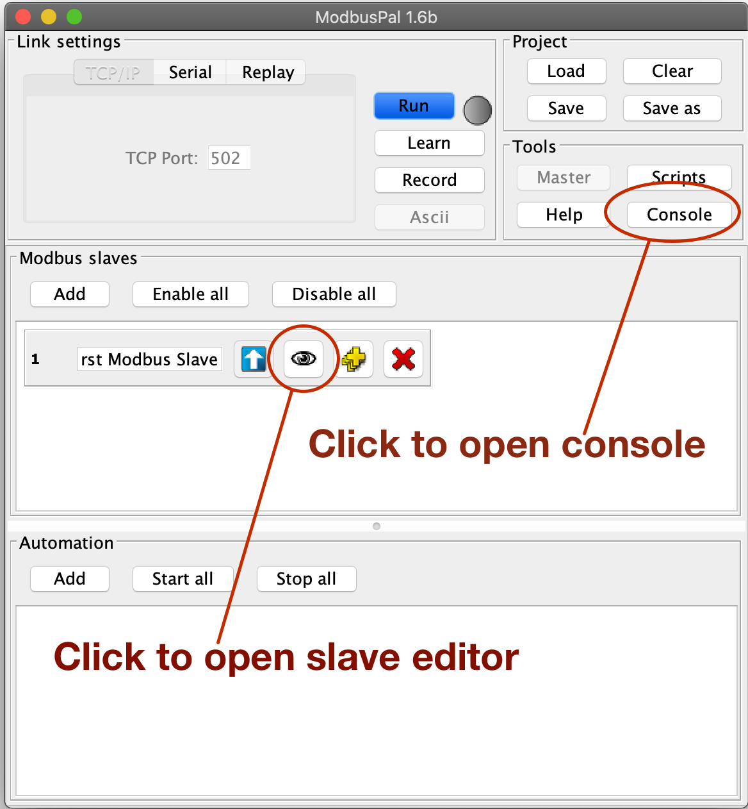
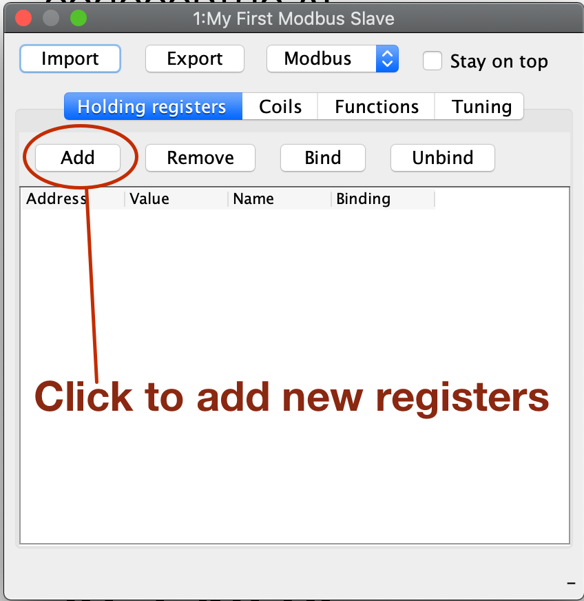
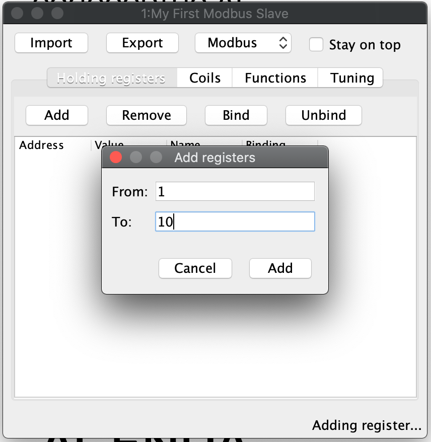
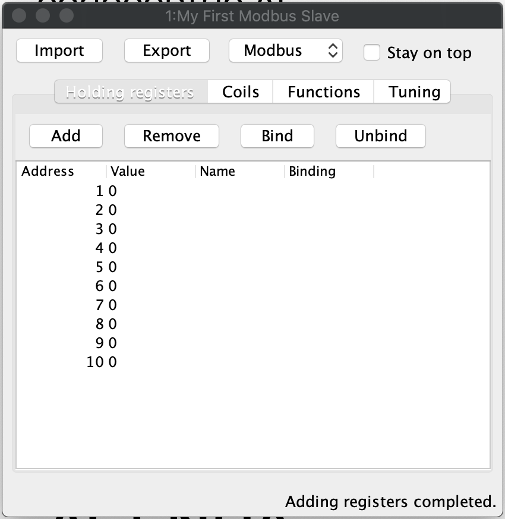
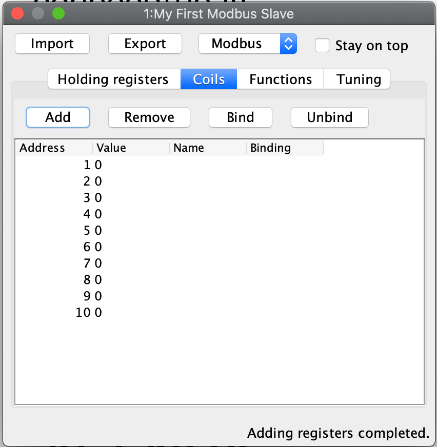
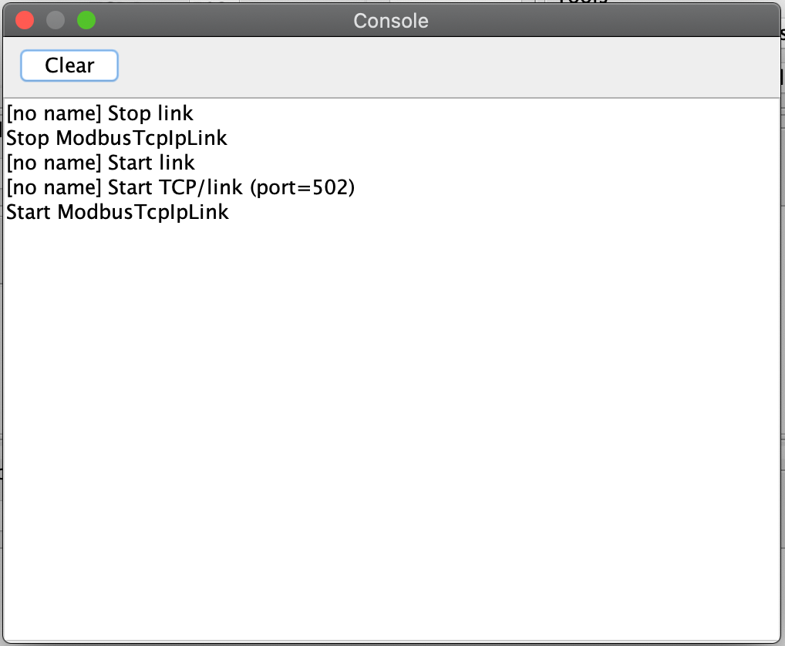

Playing around with Apache PLC4X with a virtual Modbus PLC
If you want to get started with Apache PLC4X, but don’t have any PLC at hand, this tutorial will demonstrate how you can use a virtual Modbus Slave software to simulate communication with Modbus enabled PLCs.
Such a fully open-source software is ModbusPal which is available from here.
All you need, is to download the file called ModbusPal.jar.
Setting up the virtual Modbus Slave
In order to run the software, you just need to execute the following command in the same directory you downloaded the Jar to:
java -jar ModbusPal.jar
After this you will see the ModbusPal UI, which will look like this:

Here be sure that the TCP port is set to 502 (Which is the default Modbus port).
Next click on Add to add a new Modbus slave:

Select a Slave ID as well as a name.
After clicking on Add your new Modbus slave is ready to start.

By clicking on the Run button your slave is generally ready to communicate.
However up until now this new wouldn’t have anything to share as we haven’t created any resources, so it would be an empty slave.
So as last steps, we have to create some resources to access.
In order do to this, click on the eye icon of your newly created slave.

This will bring up an editor in which we can add some so-called Holding registers and some Coils.
Let’s start with adding some Holding registers.
So make sure Holding registers is selected and then click on the Add button:

The tool will suggest creating 65536 new registers, I usually create 10 or so.
When I use ths tool some times I have to click the Add button more than once as the editor doesn’t always open the first time.
|

After this the Holding register tab should look like this:

Now do the same on the Coils tab, which should look like this after that:

As a last step, I would suggest to open the Console.
You can do this by clicking on the Console button of the main UI.
This will open the following window:

Here ModbusPal will log every important event … especially when getting new connections from PLC4X.
Some Modbus basics
In general Modbus only knows two types of data: Coils and Registers.
Coils are always simple bits or boolean values and Registers are always 16 bit short values.
However, there are different types of these and they have different names:
-
Discrete Inputs(Boolean values) (read-only) -
Coils(Boolean values) (read-write) -
Input Registers(16 bit short values) (read-only) -
Holding Registers(16 bit short values) (read-write)
For Modbus there is no universally agreed upon notation for addresses, however as the addresses are extremely simple, in PLC4X we address these as follows:
| Modbus Type | PLC4X Address Syntax |
|---|---|
Discrete Inputs |
|
Coils |
|
Input Registers |
|
Holding Registers |
|
All addresses support a notation with and without a size. If the size is not specified, then PLC4X assumes a size of 1.
A PLC4X connection-string generally has the same structure for all drivers:
{driver-name}:{transport-name}://{transport-config}?{parameters}
The fragments transport-name and parameters herby are usually optional, as every driver can support a default-transport, which is used if the transport is omitted.
Also are most drivers implemented in a way that doesn’t require any parameters.
These are only required if the connection requires some non-default settings.
For Modbus the typical transports are:
-
tcp (transport-config is the ip or host-name of the slave and can be suffixed by a port separated from the ip/host with
:) -
serial (transport-config is the device name of the serial interface)
If we have set up ModbusPal as described above and are running this on the same computer, the connection string to connect to this should be:
modbus-tcp://localhost
If you stated ModbusPal on a port different from Modbus' default port 502 you would have to also provide this port in the connection string.
So assuming you started it on port 1502, then the connection string would look as follows:
modbus-tcp://localhost:1502
Writing code
In order to write a valid PLC4X Java application, all you need, is to add a dependency to the api module.
When using Maven, all you need to do is add this dependency:
<dependency>
<groupId>org.apache.plc4x</groupId>
<artifactId>plc4j-api</artifactId>
<version>{project-version}</version>
</dependency>
This will allow you to write a valid application, that compiles fine. However, in order to actually connect to a device using a given protocol, you need to add this protocol implementation to the classpath.
For example in order to communicate using the Modbus protocol, you would need to add the following dependency:
<dependency>
<groupId>org.apache.plc4x</groupId>
<artifactId>plc4j-driver-modbus</artifactId>
<version>{project-version}</version>
<scope>runtime</scope>
</dependency>
Connecting
So as soon as your project has the API and a driver implementation available, you first need to get a PlcConnection instance.
This is done via the PlcDriverManager by asking this to create an instance for a given PLC4X connection string.
String connectionString = "modbus-tcp://localhost";
try (PlcConnection plcConnection = new PlcDriverManager().getConnection(connectionString)) {
... do something with the connection here ...
}
PLC4X generally supports a very limited set of functions, which is not due to the fact, that we didn’t implement things, but that PLCs generally support a very limited set of functions.
The basic functions supported by PLCs and therefore supported by PLC4X are:
-
Read data
-
Write data
-
Subscribe for data
-
Execute functions in the PLC
-
List resources in the PLC
In general, we will try to offer as many features as possible. So if a protocol doesn’t support subscription based communication it is our goal to simulate this by polling in the background, so it is transparent for the users.
But there are some cases in which we can’t simulate or features are simply disabled intentionally:
-
If a PLC and/or protocol don’t support executing of functions, we simply can’t provide this functionality.
-
We will be providing stripped down versions of drivers, that for example intentionally don’t support any writing of data and executing of functions.
Therefore, we use metadata to check programmatically, if a given feature is available:
Reading Data
// Check if this connection support reading of data.
if (!plcConnection.getMetadata().isReadSupported()) {
logger.error("This connection doesn't support reading.");
return;
}
As soon as you have ensured that a feature is available, you are ready to build a first request.
This is done by getting a PlcRequestBuilder:
// Create a new read request:
// - Give the single item requested the alias name "value"
PlcReadRequest.Builder builder = plcConnection.readRequestBuilder();
builder.addItem("value-1", "coil:1");
builder.addItem("value-2", "coil:3[4]");
builder.addItem("value-3", "holding-register:1");
builder.addItem("value-4", "holding-register:3[4]");
PlcReadRequest readRequest = builder.build();
So, as you can see, you prepare a request, by adding items to the request and in the end by calling the build method.
Hereby the first string value is simply an alias you can give the the address as this is usually a more readable way.
The second argument is then the address string itself.
In above example we didn’t add discrete-input and input-registers as ModbusPal doesn’t seem to support these.
The request is sent to the PLC by issuing the execute method on the request object:
CompletableFuture<? extends PlcReadResponse> asyncResponse = readRequest.execute();
asyncResponse.whenComplete((response, throwable) -> {
... process the response ...
});
In general all requests are executed asynchronously.
So as soon as the request is fully processed, the callback gets called and will contain a readResponse, if everything went right or a throwable if there were problems.
However, if you want to write your code in a more synchronous fashion, the following alternative will provide this:
PlcReadResponse response = readRequest.execute().get();
Processing of the responses is identical in both cases. The following example will demonstrate some of the options you have:
for (String fieldName : response.getFieldNames()) {
if(response.getResponseCode(fieldName) == PlcResponseCode.OK) {
int numValues = response.getNumberOfValues(fieldName);
// If it's just one element, output just one single line.
if(numValues == 1) {
logger.info("Value[" + fieldName + "]: " + response.getObject(fieldName));
}
// If it's more than one element, output each in a single row.
else {
logger.info("Value[" + fieldName + "]:");
for(int i = 0; i < numValues; i++) {
logger.info(" - " + response.getObject(fieldName, i));
}
}
}
// Something went wrong, to output an error message instead.
else {
logger.error("Error[" + fieldName + "]: " + response.getResponseCode(fieldName).name());
}
}
for (String tagName : response.getTagNames()) {
if(response.getResponseCode(tagName) == PlcResponseCode.OK) {
int numValues = response.getNumberOfValues(tagName);
// If it's just one element, output just one single line.
if(numValues == 1) {
logger.info("Value[" + tagName + "]: " + response.getObject(tagName));
}
// If it's more than one element, output each in a single row.
else {
logger.info("Value[" + tagName + "]:");
for(int i = 0; i < numValues; i++) {
logger.info(" - " + response.getObject(tagName, i));
}
}
}
// Something went wrong, to output an error message instead.
else {
logger.error("Error[" + tagName + "]: " + response.getResponseCode(tagName).name());
}
}
In the for loop, we are demonstrating how the user can iterate over the address aliases in the response. In case of an ordinary read request, this will be predefined by the items in the request, however in case of a subscription response, the response might only contain some of the items that were subscribed.
Before accessing the data, it is advisable to check if an item was correctly returned.
This is done by the getResponseCode method for a given alias.
If this is PlcResponseCode.OK, everything is ok, however it could be one of the following:
-
NOT_FOUND
-
ACCESS_DENIED
-
INVALID_ADDRESS
-
INVALID_DATATYPE
-
INTERNAL_ERROR
-
RESPONSE_PENDING
Assuming the return code was OK, we can continue accessing the data.
As some addresses support reading arrays, with the method getNumberOfValues the user can check how many items of a given type are returned.
For convenience the response object has single-argument methods for accessing the data, which default to returning the first element.
response.getObject(fieldName)
If you want to access a given element number, please use the two-argument version instead:
response.getObject(fieldName, 42)
PLC4X provides getters and setters for a wide variety of Java types and automatically handles the type conversion.
However, when for example trying to get a long-value as a byte and the long-value exceeds the range supported by the smaller type, a RuntimeException of type PlcIncompatibleDatatypeException.
In order to avoid causing this exception to be thrown, however there are isValid{TypeName} methods that you can use to check if the value is compatible.
Writing Data
The code for writing is very similar to the code for reading, however when creating the write request, we have to pass in the data alongside the field definitions.
While all 4 field types support reading from, only the coil and holding-register field types support writing to.
If you attempt to write to these, this will result in errors.
So again, we first check if this driver supports writing (Some drivers such as passive-mode drivers or read-only versions might generally not support writing):
// Check if this connection support reading of data.
if (!plcConnection.getMetadata().isWriteSupported()) {
logger.error("This connection doesn't support writing.");
return;
}
As soon as you have ensured that a feature is available, you are ready to build a first request.
This is done by getting a PlcRequestBuilder:
// Create a new read request:
// - Give the single item requested the alias name "value"
PlcWriteRequest.Builder builder = plcConnection.writeRequestBuilder();
builder.addItem("value-1", "coil:1", true);
builder.addItem("value-2", "coil:3[4]", true, false, true, true);
builder.addItem("value-3", "holding-register:1", 42);
builder.addItem("value-4", "holding-register:3[4]", 1, 2, 3, 4);
PlcWriteRequest writeRequest = builder.build();
You can see that for every element that should be written, the same number of arguments have to be provided.
PlcWriteResponse response = writeRequest.execute().get();
Actually executing the write operation is almost identical to the reading, with the only difference, that the result only provides status codes and no values.
for (String fieldName : response.getFieldNames()) {
if(response.getResponseCode(fieldName) == PlcResponseCode.OK) {
logger.info("Value[" + fieldName + "]: successfully written to device.");
}
// Something went wrong, to output an error message instead.
else {
logger.error("Error[" + fieldName + "]: " + response.getResponseCode(fieldName).name());
}
}